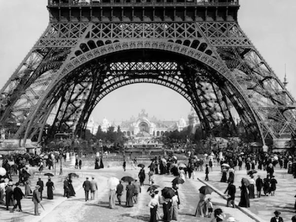

Início da Belle Époque
Entre o fim da Guerra Franco-Prussiana (1871) e o início da Primeira Guerra (1914), consolida-se uma sensação de paz relativa e progresso.

1871 — 1914
Entre o fim da Guerra Franco-Prussiana (1871) e o início da Primeira Guerra (1914), consolida-se uma sensação de paz relativa e progresso.